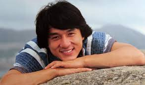

| 1page | 2page | 3page |
|  |
Jackie Chan, SBS, MBE,[1] PMW, [2] (born Chan Kong-sang, ; 7 April 1954)[3] is a Hong Kong actor, martial artist, film director, producer, stuntman, and singer. In his movies, he is known for his acrobatic fighting style, comic timing, use of improvised weapons, and innovative stunts, which he typically performs himself. Chan has been training in Kung fu and Wing Chun. He has been acting since the 1960s and has appeared in over 150 films. Chan has received stars on the Hong Kong Avenue of Stars and the Hollywood Walk of Fame. As a cultural icon, Chan has been referenced in various pop songs, cartoons, and video games. An operatically trained vocalist, Chan is also a Cantopop and Mandopop star, having released a number of albums and sung many of the theme songs for the films in which he has starred. He is also a notable philanthropist.[4] In 2015, Forbes magazine estimated his net worth to be $350 million.[5] Early lifeChan was born on 7 April 1954, in British Hong Kong, as Chan Kong-sang, to Charles and Lee-Lee Chan, refugees from the Chinese Civil War. He was nicknamed Pao-pao Chinese: 炮炮 ("Cannonball") because the energetic child was always rolling around.[6] His parents worked for the French ambassador in Hong Kong, and Chan spent his formative years within the grounds of the consul's residence in the Victoria Peak district.[7] Chan attended the Nah-Hwa Primary School on Hong Kong Island, where he failed his first year, after which his parents withdrew him from the school. In 1960, his father emigrated to Canberra, Australia, to work as the head cook for the American embassy, and Chan was sent to the China Drama Academy, a Peking Opera School run by Master Yu Jim-yuen.[7][8] Chan trained rigorously for the next decade, excelling in martial arts and acrobatics.[9] He eventually became part of the Seven Little Fortunes, a performance group made up of the school's best students, gaining the stage name Yuen Lo in homage to his master. Chan became close friends with fellow group members Sammo Hung and Yuen Biao, and the three of them later became known as the Three Brothers or Three Dragons.[10] After entering the film industry, Chan along with Sammo Hung got the opportunity to train in hapkido under the grand master Jin Pal Kim, and Chan eventually attained a black belt.[11] Jackie Chan also trained in other styles of martial arts such as karate, judo, taekwondo, and Jeet Kune Do. He began his career by appearing in small roles at the age of five. At age eight, he appeared with some of his fellow "Little Fortunes" in the film Big and Little Wong Tin Bar (1962) with Li Li-Hua playing his mother. Chan appeared with Li again the following year, in The Love Eterne (1963) and had a small role in King Hu's 1966 film Come Drink with Me.[12] In 1971, after an appearance as an extra in another kung fu film, A Touch of Zen, Chan was signed to Chu Mu's Great Earth Film Company.[13] At seventeen, he worked as a stuntman in the Bruce Lee films Fist of Fury and Enter the Dragon under the stage name Chan Yuen Lung . He received his first starring role later that year in Little Tiger of Canton that had a limited release in Hong Kong in 1973.[15] In 1975, due to the commercial failures of his early ventures into films and trouble finding stunt work, Chan starred in a comedic adult film All in the Family in which Chan appears in his first nude sex scene. It is the only film he has made to date without a single fight scene or stunt sequence.[16] Jackie Chan later also appeared in one other sex scene, in Shinjuku Incident. Chan joined his parents in Canberra in 1976, where he briefly attended Dickson College and worked as a construction worker.[17] A fellow builder named Jack took Chan under his wing, thus earning Chan the nickname of "Little Jack" that was later shortened to "Jackie", and the name Jackie Chan has stuck with him ever since.[18] In the late 1990s, Chan changed his Chinese name to Fong Si-lung (Chinese: 房仕龍), since his father's original surname was Fong.[18] UP |